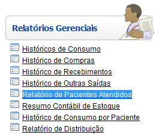
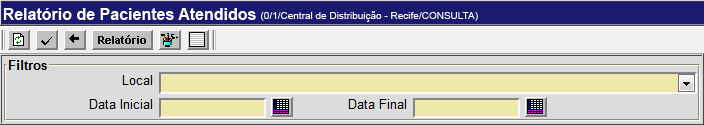
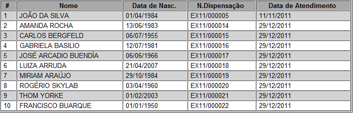
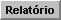
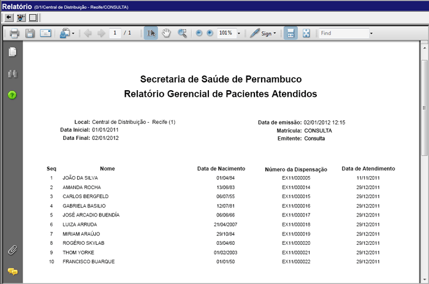

Relatório de Pacientes Atendidos [ Voltar ]
O formulário "Relatório de pacientes atendidos" encontra-se dentro do menu "Relatórios Gerenciais". 
Ao clicar no formulário, a seguinte tela será exibida: 
2° Passo: clique no botão  para
gerar o histórico. para
gerar o histórico. 
3° Passo: para visualizar o relatório, clique no botão  na barra de botões. Para imprimi-lo, clique em seguida no botão [Imprimir] do navegador. 
|